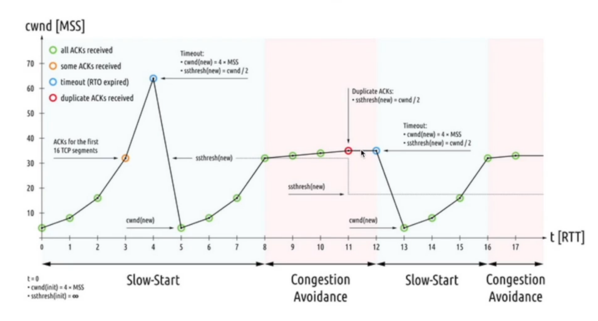
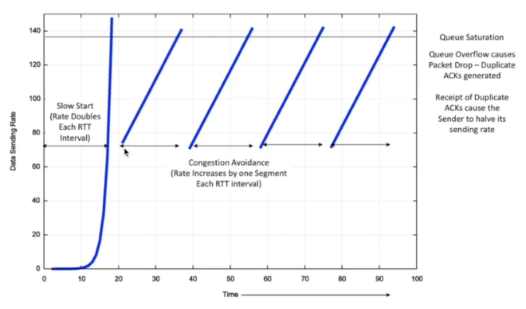
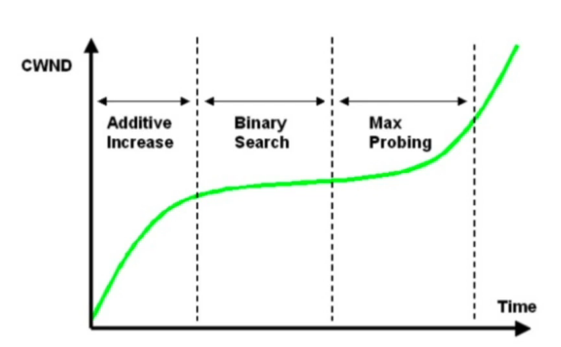
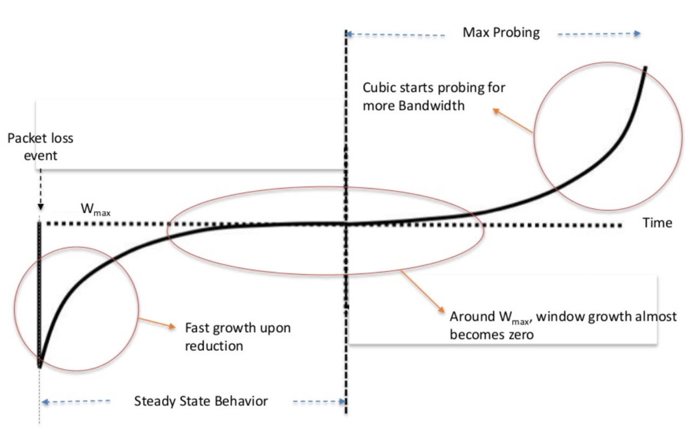

前言
在解释TCP的拥塞控制算法之前，需要了解TCP的两个窗口RWND接收窗口和CWND拥塞窗口。
接收端会维护接收窗口，会告诉发送端自己能够处理多少的数据，在发送ACK的时候，会告诉发送端自己的接收窗口的大小。
发送端会维护拥塞窗口，当网络上出现丢包等表明网络拥塞的情况时的情况时，需要修改自己的窗口大小来进行调整。
接收窗口的数值接收端能够明确的告诉发送端具体的大小，但是拥塞窗口没有明确的数值告诉发送方应该设置为多大。
为了解决这一问题，需要使用到拥塞控制算法，来告诉发送方应该设置窗口为多大来避免出现网络拥塞。
Tahoe和RENO算法
在最原始的拥塞控制算法Tahoe中，将整个拥塞控制算法分为慢启动和拥塞避免两个部分。
慢启动指的是TCP连接刚建立的时候，一点一点的提速，试探网络的承受能力。每过一个RTT，拥塞窗口的大小翻倍，直到CWND大小达到了设置的慢启动阈值ssthresh或者发生了丢包，进入到拥塞避免算法。
在拥塞避免的过程中，每过一个RTT，CWND的大小加一。当网络中发生丢包时，将ssthresh设置为当前CWND的一半，CWND重置为1进入慢启动过程。

RENO算法在Tahoe上进行了改进，当网络中出现了重复确认的情况时，Reno算法只会降低CWND为当前CWND大小的一半，来提高网络的利用率。

Reno的问题主要有以下几点：
- 在于受链路Buffer的影响很大。
- 因为其CWND大小每次只能加一,对于高带宽网络可能需要很长的时间才能够到达合适的拥塞窗口大小，在过程中会浪费大量的网络带宽，对于高带宽的网络利用率相当低。
- 每收到一个ACK就将CWND加一，对于RTT小的连接，其CWND的增长速度会很快，但是对于RTT大的连接，其在链路上占用的资源会比较小。RTT小的连接会不公平的占用更多的带宽。
BIC和CUBIC算法
BIC算法在RENO的基础上做了一些改进，将拥塞避免的过程分为三部分
- 在丢包后将CWND降为丢包时 CWND 的常数倍（一般为0.8),并选择上次丢包时的CWND和本次丢包的CWND作为饱和点，然后以一个较快的速度增长CWND大小。
- 在接近饱和点，使用二分算法来去逐步的接近饱和点。
- 到达饱和点之后转为二次函数去探测下一个极限。当出现丢包时重复第一部分。
BIC的好处在于丢包后能够迅速的进行恢复，在稳定期能够保持更长的时间，同时能够继续探测更高的带宽值。

CUBIC比BIC算法在搜索拥塞窗口最大值的过程中更加的温和，使用三次函数来代替二分算法并且使用拐点值作为拥塞窗口的大小。

CUBIC 的优势在于因为其算法与RTT无关，所以更加公平，同时适合于网络带宽大的网络。
但是CUBIC依旧有缺点，其缺点在于当网络的传输带宽出现变化时，需要比较长的时间才能达到Wmax，同时CUBIC更容易加重链路的负担。
VEGAS 算法
基于丢包的算法可以达到最大的传输速率，但是它是以高延迟和高丢包率作为代价的，但是它是以高延迟和高丢包率作为代价的。随着内存价格降低，交换机的Buffer越来越大后，容易导致Bufferfloat，
与之前基于丢包的算法不同，VEGAS 算法会监控RTT，在尝试增加发送速率时如果发现丢包或者RTT增加就降低发送速率，认为网络中出现拥塞，就将降低发送速率。
但是其致命的缺点在于不能很好的跟基于丢包的算法共存，在同时使用时会导致竞争不过基于丢包的算法，因此没有得到大规模的应用。
PRR 算法
TODO
BBR算法
TODO